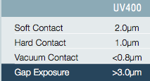
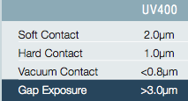
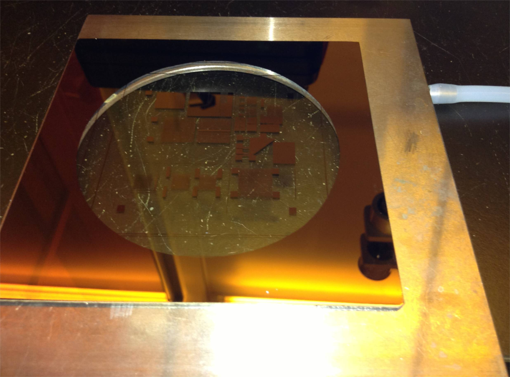
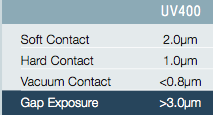

Update 4/1/2012 We now have available an i-line filter (365nm) and a new dual detector pair. The new detector pair is on the left, the previous detector pair on the right. Each has a two detectors; 405nm always feeds to channel 2 of the lamp supply (CI2). Channel 1 of the left pair is for 365nm. Please ask for instruction before changing modes.
Reference material:
DANGERS TO YOU:
DANGERS TO EQUIPMENT:
USING THE MICROSCOPE:
Turn on red VACUUM valve and black COMPRESSED AIR valve
on the wall to the left of the mask aligner (listen
for air flow). Do not turn on nitrogen gas (turn on
only as needed).
When aligner is powered up, the pneumatic mechanism moves the microscope to home position; make sure the path is free of objects. Press red POWER button on mask aligner. If alarm sounds, air flow is insufficient.
Turn on the microscope lamp timer to the right and above mask aligner (rotate timer CW).
The microscope manipulator is equipped with pneumatic brakes which can be unlocked by pressing the buttons on the manipulator handle; the top button enables Y motion, the bottom enables X motion, and both pressed together allow motion in all directions. The motion is intuitive as you look into the microscope; as you move the manipulator to the right, the microscope moves to the left, but the image moves to the right. If it sticks a little, pulling down lightly on the handle may may help.
USING THE CONTACT PRINTER AND MASK ALIGNER:
Turn on black UV LAMP POWER switch (on CIC 500 supply).
Wait through test cycle on LED display, then press
START just below the power switch. Lamp should start
within 4 fires; if not, ask for help. Optical sensor
should be in CI2 mode (for 405nm sensor).
Allow lamp to warm up (5 minutes after tone sounds).
AUTO-PROGRAM EXPOSURE LEVEL: With mask holder and wafer chuck in place but EMPTY, rotate lever on left of aligner away from you (CCW) to bring wafer chuck into the CONTACT position. You should hear a "click" indicating it has recognized contact. Set exposure timer to 15 seconds (outer clear ring to 1.5, black multiplier knob to x10s). Make sure microscope path is clear. Press the green EXPOSURE button and watch the lamp electrical power change from about 260W idle to the necessary power for exposure). If it is higher than 300W, discontinue use within a few hours and ask for help changing lamps. By pressing the DS button on the lamp supply, you can instead watch the exposure intensity at the sampl; it should stabilize at 26mW/cm2.
LOAD MASK: Unclamp mask holder (two knurled nuts facing you),
slide out to thye left and flip over end to end so the vacuum line is on your right.
Place mask chrome side up (broze color up) on the holder with any ID markings
on your left (our standard; that side will end up on the right of your wafer),
and center ed on the 3 inch hole. Press the VACUUM MASK button. Turn on
nitrogen supply and blow off mask, then turn off nitrogen. Flip the mask holder
back over, reinsert it (slide it all the way in)
and clamp it in place.

SET HEIGHT: Using the lowest mag objective (10x), focus on the mask features. Slide the mask holder out most of the way to the left and clamp it so it does not interfere with the wafer chuck. On the wafer chuck place a test substrate the same thickness (+-100microns) as your sample, but with some features to focus on (a mottled half wafer is available near the aligner). With the mask still moved out of the way, slide the wafer chuck into the mask aligner and raise it to the contact position. Do not turn the microscope focus knob, but instead use the 10 turn height dial on the bottom front face to bring the top surface of the substrate into focus. The substrate surface and the bottom of the mask are now in the same plane. For the first exposure, rotate the 10 turn height dial exactly two turns to the left to raise the sample 300 microns. This adds spring pressure to the contact. Or, for aligning further exposures, rotate the 10 turn dial one turn rather than two; this will allow the separation lever to bring them out of contact. Then remove test substrate.
LOAD SAMPLE: Place sample on the wafer chuck, photoresist up. Orient "wafer flat" or other alignment features on the right (markings on the upside down mask are also on the right).
SET CONTACT MODE: See modes at the bottom of this document (HP and Vacuum mode are the same). Standard hard contact mode recommended except for highest resolution. If using HP vacuum mode, make sure vacuum gasket on chuck is in place and wafer is aligned to permit a vacuum to be pulled between the mask and wafer. In ST Hard Contact mode, a puff of nigrogen is applied to press the substrate against the mask during exposure. In ST Soft Contact mode, the substrate is held to the chuck with a vacuum during exposure and contact pressure is applied only through the spring force.
APPLY VACUUM: Vacuum must be applied and removed manually with this MJB3 (contrary to the manual); use the valve on the vacuum line to the left of the mask aligner. Leave vacuum on except when in contact for ST Hard Contact exposures and except when ready to remove wafer.
CONTACT: Rotate lever on left of aligner away from you to bring wafer chuck into the contact position. You should hear a "click" indicating it has recognized contact; if not, apply slightly more torque by pressing up with index finger of left hand on the shaft of lever while pressing down with thumb on end of lever. Do not over torque--if in doubt ask for help. Make sure lever does not drift back.
ALIGNMENT: Bring separation lever toward you to take the sample slightly out of contact (you may need to also bring the wafer down a known amount witht he height control knob) Use low mag objective (10x) for initial alignment, focusing on both sample and mask. Align using x, y, and theta controls; move to one edge of the mask and align x and y; move the other edge and align half way using theta, the other half using x and y. Repeat until entire sample is aligned. Releasing the sample and your mask). Releasing only one (X or Y) brake is helpful in this process. Then bring sample back into contact by sliding the separation lever back (and if necessary returning the chuck height knob). Recheck alignment using higher magnification objective. You may need to separate, readjust, and recontact several times until you are satisfied.
EXPOSURE: Set exposure timer to desired exposure time (see log book for what others have used). For example for 6 seconds, the outer clear ring black pointer should be at .6 with the multiplier at x10s. Press the green EXPOSURE button and watch the exposure intensity stabilize quickly at 26mW/cm2 (press DS to switch modes if it is reading lamp wats).
SAMPLE REMOVAL: DO NOT TOUCH THE SAMPLE CHUCK YET First turn off vacuum valve and bring the sample out of contact. Then slide chuck out. If you try and slide out while in contact, you will scratch your sample and the mask.
FURTHER EXPOSURES: You need not reset the height if you are using the same mask and the same substrate thickness.
SHUT DOWN: Turn off the UV lamp. The cooling air must remain on for 10 minutes after the lamp is off; the aligner and microscope light can be on or off during this time. Turn off the mask aligner. After UV lamp is cool, turn off compressed air and vacuum lines.
OTHER INFORMATION: 350W mercury lamp.
EXPOSURE MODES (note "HP mode" = "Vacuum Contact mode"):
